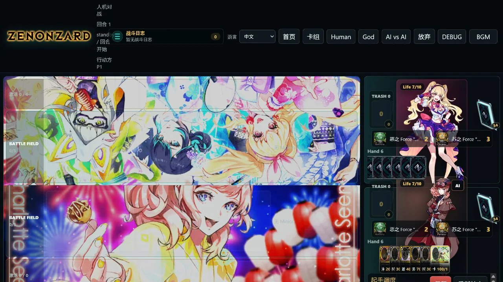
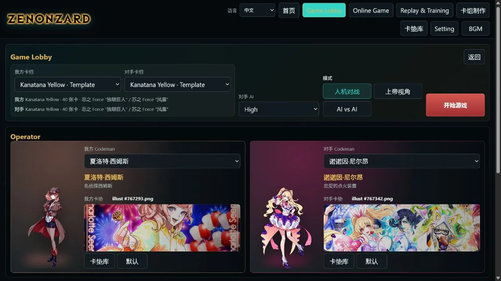
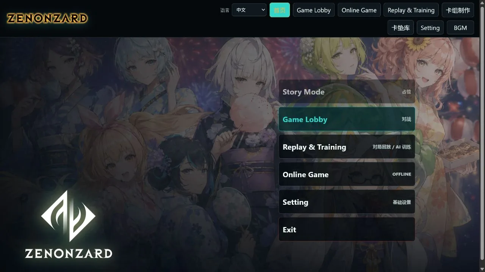

卡牌对战
处理核心对战流程，并修正效果目标筛选、伤害与 Force 治疗、基地持有者替换和 Bless 返回；弃牌与抽牌会显示动画和增益详情。

Game Lobby
选择双方卡组、Codeman、卡垫与 AI 难度，然后进入你想要的对战方式。卡池包含 EX02C/SAO 的 70 张卡及对应 EX02 原版卡面；也可私下预览卡牌变身后的形态。

你控制一方，另一方由所选难度的 AI 与 Codeman 配置驱动。这是最接近普通游玩的一种模式。
处理核心对战流程，并修正效果目标筛选、伤害与 Force 治疗、基地持有者替换和 Bless 返回；弃牌与抽牌会显示动画和增益详情。
搜索卡池、检查张数与 Force 配置；同名重印卡合并计算，套牌最多 3 张。
保存最近对局并按事件回看；训练结果可以关联回放，寻找输局中的其他路线。
支持同一局域网直连，也支持通过项目维护者的个人服务器建立房间。
AI & Codeman
Easy 是 Greedy CPU；Medium 与 High 使用强化学习训练出的策略。训练规模有限，因此现阶段的定位是可玩的研究与娱乐功能，而不是高水平竞技对手。
当前说明
不加载训练模型，依据合法行动与人工启发式权重选择当前看来最有利的动作，运行快，也最容易理解。
作者拥有统计学学位，但没有修读强化学习课程，研究方向也与此无关；模型训练规模同样不大。电脑 AI 的训练数据和卡池目前只覆盖 PC01，PC01R、EX01、PC02、PC02R DIVINE、EX02、EX02C/SAO 没有进入训练流程。当前 AI 与 ZENONZARD 正式运营时期万代使用的 AI 仍有明显差距。相关实现由 Codex 协助编写，并参考了 ygo-agent 的公开方法与工程结构。
ygo-agent ↗CODEMAN MEMORY
对局结束后，系统会在本机保存该 Codeman 最近的一部分战斗记录与回放。若你为某个 Codeman 进行了专门训练，并生成了它自己的 .pt 模型，选择这个对手时会优先加载该专属模型；没有专属模型时则使用公开默认模型。
对战时点击自己的 Codeman，可以让 AI 对当前选择给出建议。由于模型能力有限，这更像一个可观察的娱乐助手，而不是可靠教练。
Actual UI

REPLAY & TRAINING
如果本机具备 NVIDIA GPU 与可用的 CUDA 环境，可以基于自己的对战记录运行本地训练。它仍是实验性的娱乐功能：一次输局也许能在 Replay 中发现另一个选择，但系统不会保证找到必胜解。
查看训练环境说明 →ONLINE GAME
联机握手要求双方客户端与所连接服务器报告的 applicationVersion 完全一致；连接前请确认三方版本一致。此规则也适用于自建服务器。Online Game 支持同一局域网内开房，也支持项目维护者的个人服务器。服务器位于加拿大，其他地区的稳定性未经充分验证；中国大陆通常需要代理才能稳定连接。
查看联机说明 →联机版本演示
CONTENT STATUS
当前包含基本卡、EX01、PC01、PC01R、PC02 与 PC02R DIVINE 的 106 张卡，以及 EX02C/SAO 的 70 张卡与对应 EX02 原版卡面。
个人项目无法覆盖足够多的组合测试，当前版本可能仍有小型规则或界面问题。
asserts.7z 资源包包含英文卡图；未覆盖的图仍可能回退到官网 URL。
顶部栏或基础设置中可选择对战 BGM；完整资源包包含 ZZ 各角色歌曲。
感谢 theFeri 提供 50+ 张高清 playmat 图，以及 Valkyrie 提供英文文本。
INSTALLATION
v0.5.2 的 Windows 版将卡组保存在安装目录 data/decks/；首次启动时从旧 AppData 卡组目录迁移，保留原文件备份且不覆盖冲突卡组。换手时选牌不再遮挡邻牌，启动失败会显示诊断信息；为保护数据，卸载时可能保留部分程序资源。仍包含 v0.5.1 的一键重置（已保存卡组不会被删除）以及 v0.5.0 加入的 EX02C/SAO 卡牌。Windows 安装包和 Linux 便携包包含可玩的游戏与默认模型。缺少完整 asserts/ 时，桌面客户端会询问是否下载并安装包含英文卡图的 asserts.7z。
Windows 使用安装包，Linux 使用便携包；macOS 和开发者使用源码包。自建服务器使用独立联机服务器包。
若缺少 asserts/，客户端会询问是否下载 asserts.7z，校验 CRC 后解压到程序目录；包为 1.53 GB，展开后 1.58 GB，请预留 3.2 GB。包含英文卡图；取消后不启动，失败可重试。
Windows 安装包不需要 Python 或 Node.js；源码启动才需要 Python 3.10+、Node.js 20+ 与 npm install。
Windows 安装包从开始菜单或桌面快捷方式启动；Linux bundle 解压后运行 ./launch-electron.sh；源码版本使用 .cmd、.sh 或 npm run electron:dev。
STORY MODE
Story Mode 目前尚未开发。长期目标是设计由 Agent 自动与用户交互的游戏，对应实现 GAL 前端，并吸收 SillyTavern 相关社群在角色、世界书与长期互动方面积累的经验，构建个人专属的、与自己的 Codeman 一起经历的 ZZ 体验。
这是未来目标，不代表第一版已经提供生成式剧情功能。
CONTRIBUTE
尤其希望有强化学习经验的贡献者一起研究：是否能训练出真正适合离线运行的 ZZ AI。英文卡图、卡牌译文、规则测试与 Bug 报告同样重要。
Star 是最省事的支持方式，也是继续更新的动力。